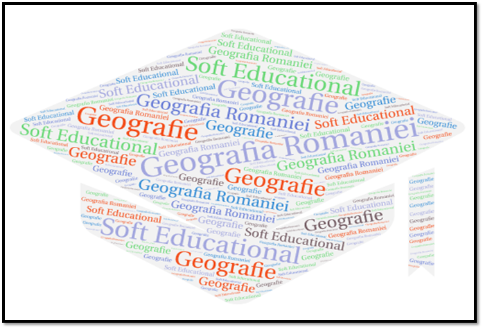

GEOGRAFIA ROMÂNIEI
MOTTO: ,,A şti nu este îndeajuns; este nevoie să aplicăm.
A dori nu este suficient; trebuie să acţionăm." (Johann von Goethe)
MIHALEA CRISTIAN
COLEGIUL NATIONAL ,,ION NECULCE"
CLASA a XI-a
Profesor coordonator: STAN CLAUDIA ELENA

Aceasta este un softul educaţional special conceput pentru a fi utilizat în procesul didactic instructiv-educativ. Soft-ul educaţional este un program informatic cu o interfaţă care să permită o modalitate de lucru interacvtivă (bazată pe meniuri, butoane, etc.)
Câteva avantaje ale folosirii acestui soft educaţional sunt: frurnizarea unui volum mare de date, facilitarea realizării unui feedback rapid şi eficient prin teste și jocuri, stimulează implicarea activă a elevului în învăţare.
În acest soft puteţi găsi:
- programa şcolară pentru examenul de bacalaureat la geografie;
- evaluări predictive cu ajutorul cărora se pot verifica cunoştiinţele de geografia României ale elevilor;
- o sinteză a lecţiilor, dar şi fiecare lecţie descrisă amănunţit (fiecare lecţie cuprinde atât un volum necesar de informaţii, cât şi galerie de imagini şi exerciţii de verificare a cunoştiinţelor după fiecare lecţie);
- evaluări sumative cu ajutorul cărora se pot verifica cunoştiinţele acumulate de elevi după studiul individual folosind acest soft;
- teste pentru bacalaureat
- jocuri interactive prin care elevul poate învăţa jucandu-se. Itemii testelor sunt de tipul DropDown, alegere multiplă cu unul sau mai multe răspunsuri corecte, adevărat-fals, SCROM quiz şi de completare. Odată cu finalizarea unui exerciţiu puteţi beneficia de un feedback rapid, astfel elevul își poate face o autoevaluare pertinentă.